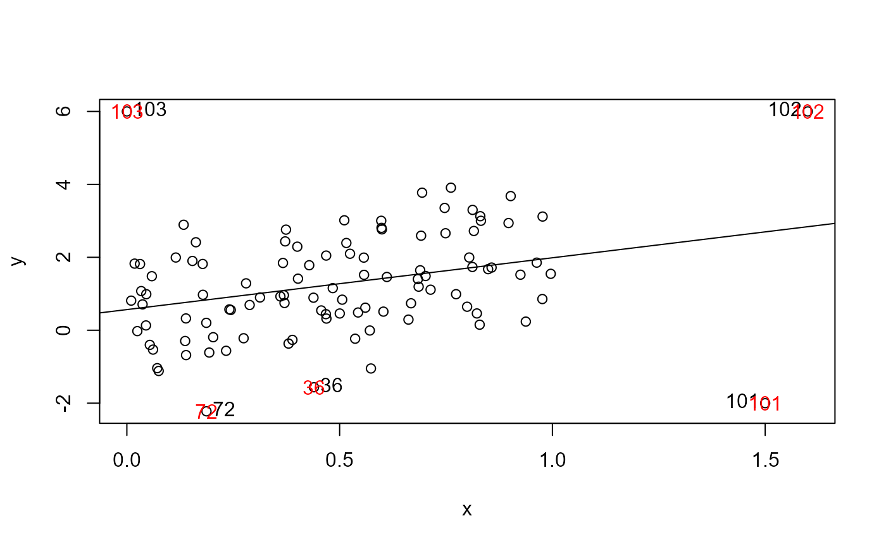
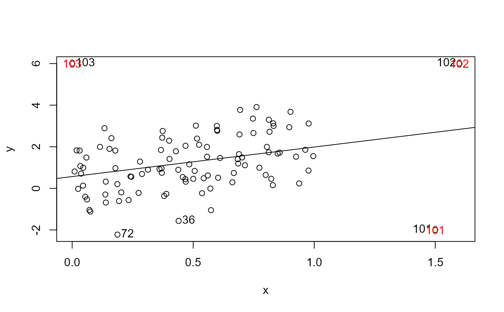
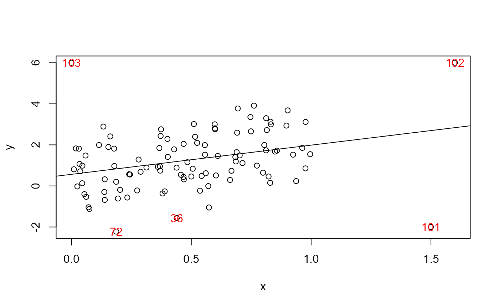

This function extends the logic used by showLabels to provide a more general
collection of methods to identify unusual or "noteworthy" points in a two-dimensional display.
Standard methods include Mahalanobis and Euclidean distance from the centroid, absolute value of distance from
the mean of X or Y, absolute value of Y and absolute value of the residual in a model Y ~ X.
Usage
noteworthy(x, y, n = length(x), method = "mahal", level = NULL, ...)Details
The `method` argument determines how the points to be identified are selected:
"mahal"Treat (x, y) as if it were a bivariate sample, and select cases according to their Mahalanobis distance from
(mean(x), mean(y))."dsq"Similar to
"mahal"but uses squared Euclidean distance."x"Select points according to their value of
abs(x - mean(x))."y"Select points according to their value of
abs(y - mean(y))."r"Select points according to their value of
abs(y), as may be appropriate in residual plots, or others with a meaningful origin at 0, such as a chi-square QQ plot."ry"Fit the linear model,
y ~ xand select points according to their absolute residuals.- case IDs
methodcan be an integer vector of case numbers in1:length{x}, in which case those cases will be labeled.- numeric vector
methodcan be a vector of the same length as x consisting of values to determine the points to be labeled. For example, for a linear modelmod, settingmethod=cooks.distance(mod)will label thenpoints corresponding to the largest values of Cook's distance. Warning: If missing data are present, points may be incorrectly selected.
In the case of method == "mahal" a value for level can be supplied.
This is used as a filter to select cases whose criterion value
exceeds level. In this case, the number of points identified will be less than or equal to n.
Examples
# example code
set.seed(47)
x <- c(runif(100), 1.5, 1.6, 0)
y <- c(2*x[1:100] + rnorm(100, sd = 1.2), -2, 6, 6 )
z <- y - x
mod <- lm(y ~ x)
# testing function to compare noteworthy with car::showLabels()
testnote <- function(x, y, n, method=NULL, ...) {
plot(x, y)
abline(lm(y ~ x))
if (!is.null(method))
car::showLabels(x, y, n=n, method = method) |> print()
ids <- noteworthy(x, y, n=n, method = method, ...)
text(x[ids], y[ids], labels = ids, col = "red")
ids
}
# Mahalanobis distance
testnote(x, y, n = 5, method = "mahal")

#> [1] 101 103 102 72 36
#> Error in noteworthy(x, y, n = n, method = method, ...): could not find function "noteworthy"
testnote(x, y, n = 5, method = "mahal", level = .99)
#> [1] 101 103 102 72 36
#> Error in noteworthy(x, y, n = n, method = method, ...): could not find function "noteworthy"
# Euclidean distance
testnote(x, y, n = 5, method = "dsq")
#> NULL
#> Error in noteworthy(x, y, n = n, method = method, ...): could not find function "noteworthy"
testnote(x, y, n = 5, method = "y")

#> [1] 102 103 72 101 36
#> Error in noteworthy(x, y, n = n, method = method, ...): could not find function "noteworthy"
testnote(x, y, n = 5, method = "ry")
#> NULL
#> Error in noteworthy(x, y, n = n, method = method, ...): could not find function "noteworthy"
# a vector of criterion values
testnote(x, y, n = 5, method = Mahalanobis(data.frame(x,y)))

#> [1] 101 103 102 72 36
#> Error in noteworthy(x, y, n = n, method = method, ...): could not find function "noteworthy"
testnote(x, y, n = 5, method = z)
#> [1] 103 102 3 77 16
#> Error in noteworthy(x, y, n = n, method = method, ...): could not find function "noteworthy"
# vector of case IDs
testnote(x, y, n = 4, method = seq(10, 60, 10))
#> [1] 10 20 30 40 50 60
#> Error in noteworthy(x, y, n = n, method = method, ...): could not find function "noteworthy"
testnote(x, y, n = 4, method = which(cooks.distance(mod) > .25))
#> [1] 101 102 103
#> Error in noteworthy(x, y, n = n, method = method, ...): could not find function "noteworthy"